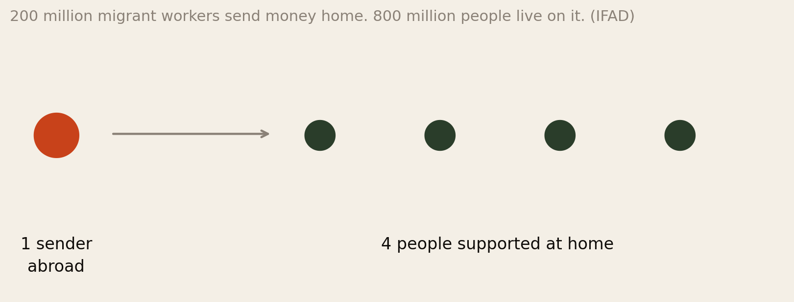
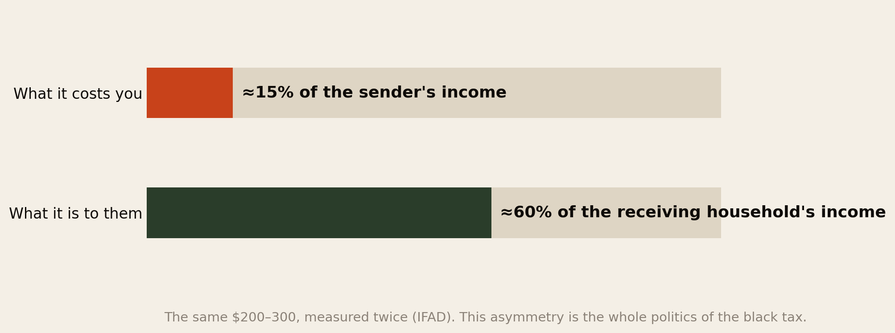
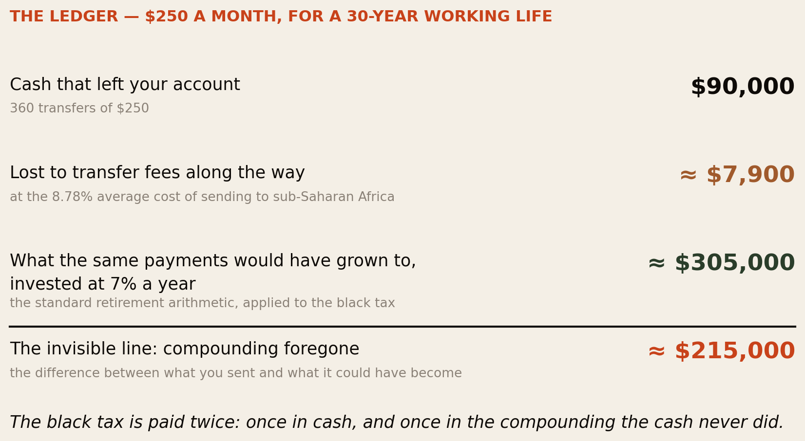
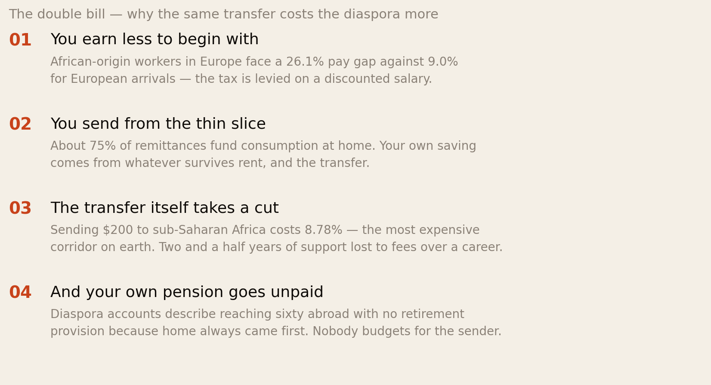
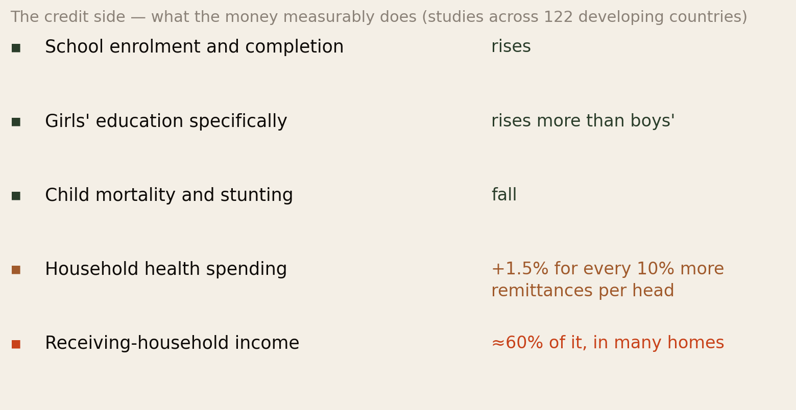
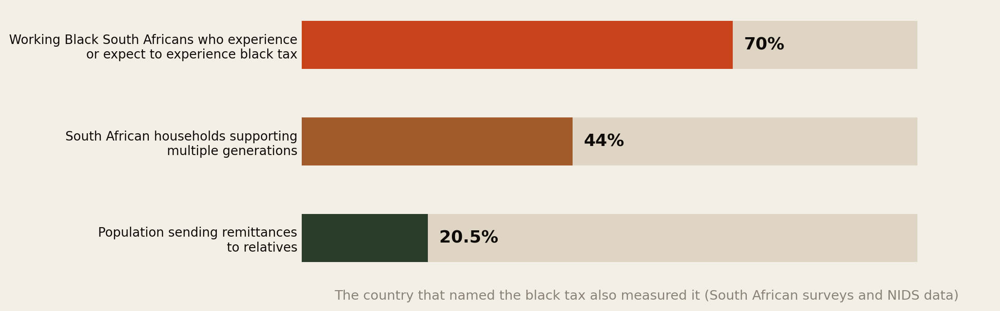
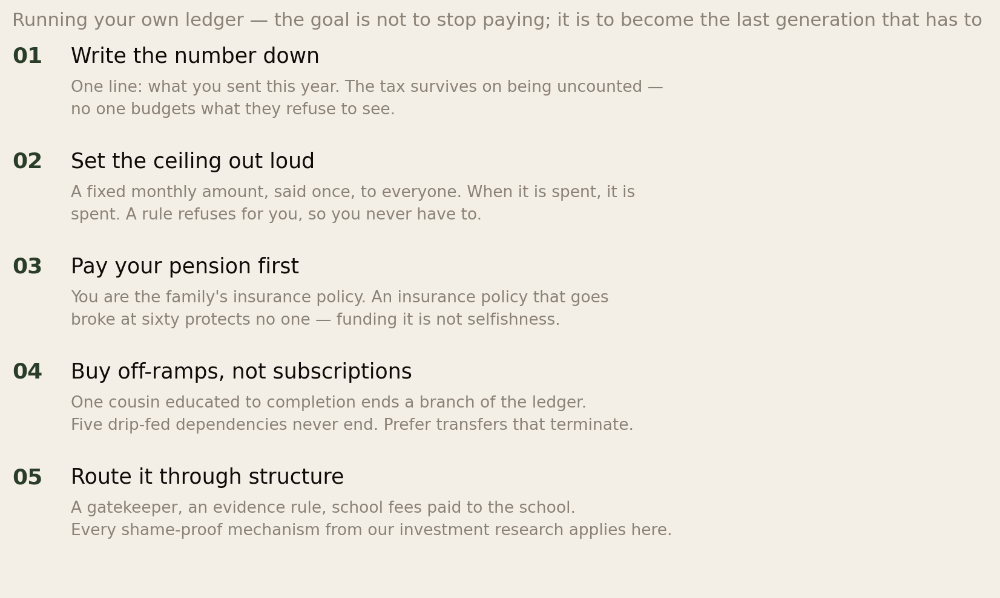

The Black Tax Ledger.
Every business keeps a ledger. The single largest recurring payment in millions of diaspora lives — the money that goes home — is the one nobody writes down. This report writes it down: what it costs over a working life, what it measurably buys, and how to run it on purpose instead of by guilt and drift.
Section 01The Short Version
Somewhere between a duty, a tax and a love language sits the money that goes home. It is the payment that never appears in a budget spreadsheet, is never discussed at the salary negotiation it silently halves, and never stops. This report treats it the way the sender’s bank does: as a series of transactions with a lifetime total.
- The ratio is one to four. Roughly 200 million migrant workers send money home, and about 800 million people live on it (IFAD). The average sender is a small pension system with no actuary.
- The leverage is 15 to 60. Migrants send on average about 15% of their income — typically $200–$300 every month or two — and that money makes up about 60% of the receiving household’s income. The same transfer is a line item to you and the roof to them. That asymmetry explains almost everything about why refusing feels impossible.
- The lifetime bill is paid twice. Our worked example: $250 a month for a 30-year working life is $90,000 in cash — and about $305,000 if the same payments had compounded at 7%. The black tax is paid once in money and once in the ~$215,000 of compounding the money never did.
- Plus a third payment to the pipes. At the 8.78% average cost of sending to sub-Saharan Africa, roughly $7,900 of that lifetime total goes to transfer fees — about two and a half years of the support itself, consumed by the corridor.
- And it is levied on a discounted salary. The African diaspora pays this from pay packets already carrying a 26.1% earnings gap, after host-country rent, out of the thin slice left over — while the sender’s own retirement is, in account after account, the line that goes unfunded.
- The credit side is real and measurable. Across 122 developing countries, remittances raise school enrolment and completion (girls’ most of all), cut child mortality and stunting, and lift health spending. This is not money burned on guilt. It is the most effective development programme Africa has — run out of the diaspora’s payslips.
- South Africa named it, and measured it: around 70% of working Black South Africans experience or expect the black tax, and 44% of households support multiple generations. What the diaspora pays across borders, the Black middle class pays across town.
The goal of this report is not to talk anyone out of paying. It is to move the black tax from the part of your life run by guilt to the part run by arithmetic — because only one of those two managers ever lets it end.
Section 02The Word Itself
The term black tax comes from South Africa, where it names what the first generation of Black professionals discovered on payday: a salary that arrives pre-committed. Support for parents whose pensions apartheid never allowed to exist, siblings’ school fees, a cousin’s rent — obligations that white colleagues on identical salaries simply did not carry. The South African household data makes the asymmetry concrete: the average Black household supports more people on the same income, and one salary routinely carries four lives.
The word is contested, and the contest is worth keeping rather than settling. Critics say tax poisons something that is actually ubuntu — mutual care, the thing that raised the sender in the first place. Defenders answer that refusing to name a cost does not remove it; it just removes it from view. Our shame research found that obligations enforced by guilt rather than agreement resist exactly this kind of naming — which is itself evidence the naming matters.
This report holds both positions at once, deliberately. The money is love, and it is also money. The second fact does not dishonour the first — but only the second one compounds.
Section 03One Sender, Four People

Start with the shape of the thing. Globally, about 200 million migrant workers send money home, and an estimated 800 million family members depend on what arrives. One to four. For Africa specifically, the flow reached about $124 billion in 2025 — roughly double all official development aid to the continent — with about 75% funding immediate consumption: food, rent, school fees, medicine.
Two things follow from the ratio. First, the average sender is running a miniature welfare state — pension, health insurance, education grants and emergency fund for four people — without any of the tools a welfare state has: no contributions from the covered, no actuarial tables, no retirement age, and no way to decline a claim. Second, the system is enormously efficient at the receiving end and almost unexamined at the sending end. Development economists have measured what remittances do for recipients for decades. Almost nobody measures what forty years of remitting does to the remitter. This report is about that missing column.
Section 04The Leverage

Here is the single most important pair of numbers in the report. The money migrants send is, on average, about 15% of what they earn. The same money makes up about 60% of the receiving household’s income.
Sit with the asymmetry, because it explains the entire emotional economy of the black tax:
- It is why you cannot say no. To you, skipping a month is an inconvenience. To them, it is the majority of the household income not arriving. When our investment research described the loyalty tax — guilt as the enforcement mechanism no contract could match — this is the arithmetic underneath the guilt. Refusal is not read as budgeting. It is read as abandonment, because functionally it is closer to abandonment than either side wants to say.
- It is why the requests seem endless. A household 60% funded by transfers is not saving its way out of needing them. The transfer holds the floor; it rarely builds the stairs. Without a deliberate off-ramp (Section 11), the steady state of the system is permanence.
- And it is why the money is genuinely irreplaceable. There is no programme, charity or government on the continent delivering 60% of household income to 800 million people with zero overhead beyond fees. The leverage that traps the sender is the same leverage that makes the money the most effective poverty instrument Africa has.
The black tax is hard to escape for the same reason it is worth paying: a dollar crosses the border and triples in meaning. The trap and the miracle are one mechanism.
Section 05The Ledger

Now the number nobody writes down. Take a representative obligation — $250 a month, squarely inside IFAD’s $200–300 range — and run it over a 30-year working life.
The cash column is simple: 360 transfers, $90,000. Most senders have never seen that figure, because no one adds up a payment that arrives as an emergency, a school term, a funeral, a roof — $250 at a time.
The second column is the one that changes how you see the first. Retirement arithmetic is boring and merciless: $250 a month invested at 7% for 30 years grows to roughly $305,000. That is not an exotic return — it is the long-run performance of an ordinary index fund, the exact mathematics our savings report showed African households are locked out of. The gap between the two columns — about $215,000 — is the part of the black tax no one ever discusses, because it is paid in a currency that never appears in any account: compounding that never happened.
Three honest notes before anyone panics or quarrels:
- This is an illustration, not your statement. Change the monthly amount, the years or the return and the figures move — proportionally, which is the point. At $150 a month the foregone total is still six figures.
- The comparison is not “family versus index fund.” Nobody sends $250 into the void; it buys the outcomes in Section 07, some of which — a sibling’s degree — compound in their own way. The ledger’s job is to make the trade visible, not to declare it wrong.
- But the invisibility is not neutral. A cost that is never totalled can never be planned, capped, shared among siblings, or ended. The people who quietly reach sixty abroad with nothing — the accounts that recur through our community-evidence research — did not decide to spend $305,000. They decided, 360 separate times, to send $250.
Section 06The Double Bill

The black tax does not fall on the diaspora the way it falls on a professional in Sandton, because the diaspora pays it through a stack of penalties this library has spent the year measuring.
The salary it comes from is already discounted — workers of sub-Saharan African origin in Europe carry a 26.1% pay gap, nearly three times the European-arrival gap, before a single transfer leaves. The cost of living it competes with is the host country’s, not the home country’s: the sender pays London rent and Lagos school fees from one payslip. The corridor takes 8.78% in motion — the most expensive remittance destination on earth, against a 3% UN target. And the shock absorber, in account after account, is the sender’s own future: the pension contribution skipped, the emergency fund that is actually the family’s emergency fund, the retirement that is planned as “the house back home” — an asset our investment research showed is itself exposed to title fraud, abandonment and currency collapse.
The family’s insurance policy is a person — and nobody is insuring the person. The most dangerous line in the ledger is not what you send. It is what you are not setting aside because you send.
Section 07The Credit Side

A ledger with only a cost column is propaganda. Here is what the development literature — decades of it, across 122 countries — says the money actually does when it lands.
Children go to school and stay there. Remittances raise enrolment, completion and private-school attendance — and they raise girls’ education more than boys’. Children survive and grow. Child mortality falls, stunting falls, undernourishment falls; a 10% rise in per-capita remittances lifts household health spending measurably. Households stand upright. The money is counter-cyclical — it arrives more reliably in crises, when everything else flees.
Set that against the moral-hazard finding our investment report documented — remittances letting weak states spend less on health and education — and you get the honest, double-entry truth: the same transfer educates your niece and quietly subsidises the ministry that failed to. Both entries are real. Neither cancels the other.
This section exists for a specific reader: the one whose ledger arithmetic in Section 05 produced not clarity but guilt about ever counting at all. Count anyway. The credit side survives the counting — it is the strongest-evidenced poverty instrument on the continent. What does not survive counting is waste, duplication, and the fifth cousin’s third business idea. Arithmetic is not the enemy of generosity. It is the enemy of leakage.
Section 08The Debit Nobody Prices
Beyond cash, fees and compounding, the literature and this library’s own research point to three quieter debits.
- The escalation mechanism. Our community-evidence research found the recurring pattern: the transfer does not close the request; it opens an account. The washing machine becomes the generator becomes the subscription. Unmanaged, the ledger’s trend line is up — not because anyone is greedy, but because a 60%-funded household reorganises itself around the funding.
- The information asymmetry, both ways. People at home convert your salary at the exchange rate and see wealth; they have never met your rent. You, four thousand miles away, cannot tell performed need from desperate need — the man who argued with his mother for years, visited, and voluntarily sent more remains the most instructive account we have recorded. The ledger cannot fix this. Only structure — and visits — can.
- The sibling subsidy. Where one child went abroad and four did not, the black tax quietly becomes a one-person levy: the sender covers not a fair share but the whole bill, plus the resentment of being seen as the lucky one. Ledgers shared among siblings — even unequally, even imperfectly — recur in the accounts of families that stayed intact.
Section 09The Country That Named It

South Africa matters to this report for two reasons. It coined the term — and because the phenomenon there is domestic rather than cross-border, it has been measured in ways the diaspora version has not: around 70% of working Black South Africans experience or expect the black tax; 44% of households support multiple generations; Black households carry more members per income than white ones on identical salaries.
The South African literature also supplies this report’s sharpest structural insight: the black tax is what happens when one generation is asked to be the pension system that history denied the generation before it. Apartheid built the South African version; colonial wage economies and absent welfare states built the continental one; migration merely stretched it across borders and multiplied it by an exchange rate. Which reframes the individual question. You are not carrying a personal failing of your family. You are a private citizen performing an unfunded state function — and the exhaustion you feel is what unfunded state functions do to the person performing them.
Section 10Running Your Own Ledger

Everything above establishes one fact: this obligation is too large to run on drift. What follows is not a way to pay less. It is a way to decide, which the evidence suggests is what actually preserves both the money and the relationships.
- Write the number down. One line, once a year: what went home. Every other decision depends on this one, and almost no sender has done it. The tax survives on being uncounted.
- Set the ceiling out loud. The families who reached peace in our community research all did a version of this: a fixed amount, stated once, to everyone. A rule refuses on your behalf — which means no individual request is ever personally refused.
- Pay your pension first, and say why. You are the family’s entire insurance stack. The single worst outcome on the whole ledger — for them, not just you — is the sender reaching old age broke. Funding your own retirement is not competing with the family; it is protecting their policy.
- Buy off-ramps, not subscriptions. Prefer transfers that terminate: a qualification completed, a sewing machine, a title deed, one cousin taken from first year to graduation. Five drip-feeds support five dependencies forever; one completed degree ends one permanently.
- Route it through structure. Gatekeeper, evidence rule, fees paid directly to the school — every mechanism from our investment research applies, and for the same reason: structure converts a guilt transaction into a documented one, and documented transactions can end without ending the relationship.
Section 11The Off-Ramp
One reframe, and it is the most important paragraph in this report.
The question senders ask is “how do I manage this burden?” The better question is generational: “how do I make sure my children are not having this conversation?” The black tax exists because the previous generation had no pension, no assets and no state behind it. It ends — the South African data implies, and the arithmetic confirms — only when some generation converts support into capacity: educations completed, incomes established at home, one funded retirement (yours) that never becomes a claim on the next generation.
That is what the ledger is ultimately for. Not to shame the spending, but to steer it: away from indefinite floor-holding, toward the specific, finishable purchases that close accounts. Every dependency you convert into an income is a payment your children will never make.
You cannot refuse to pay the black tax — the leverage in Section 04 saw to that. What you can refuse is to pass it on unamortised. The goal is not to be free of it. The goal is to be the last one paying.
Section 12The Uncomfortable Part
First, this report has priced something many readers believe should never be priced. Putting $305,000 next to your mother’s upkeep can read as an accusation, and it is not one. The accounting does not say the money was wasted; the credit side says the opposite. But refusing to count has a documented body count of its own — the senders who arrive at sixty with nothing were protected from the arithmetic, not by it. The discomfort of the number is smaller than the cost of never seeing it.
Second, the ledger is not symmetrical, and honesty requires saying so. The parent it supports spent unpriced decades raising the sender; the village schooled them; the family often funded the very migration the salary comes from. The black tax is, in part, a repayment schedule on real capital invested. What makes it corrosive is not the existence of the debt — it is that the schedule has no number, no term and no end, which no legitimate debt is allowed to lack.
Third, the exhaustion is allowed to be real at the same time as the love. The dominant public scripts are gratitude (“family is everything”) and grievance (“they are bleeding me dry”), and most senders live in neither — they live in both at once, and say so nowhere, because our shame research applies with full force: the sender who admits strain looks like a failure abroad and a miser at home. If this report does one thing, let it be this: the ledger gives you a way to talk about the money that is neither of those scripts — just arithmetic, said out loud, with love intact.
Section 13Method & Limits
This report combines published remittance and survey data with our own clearly-labelled arithmetic, as at 24 August 2026.
- Fig 3 is our own construction, and its assumptions are choices. $250/month is the midpoint-adjacent value of IFAD’s $200–300 global range; 30 years is a stylised working life; 7% is a conventional long-run nominal equity return, not a guarantee; fees apply the Q1-2025 sub-Saharan average (8.78%) flatly across three decades in which costs have varied. The output is an illustration of magnitude. Real ledgers differ — and inflation means the real (today’s-money) foregone sum is smaller than the nominal $305,000, though still transformative at any plausible deflator.
- The 15%/60% figures are IFAD global averages, not Africa-specific measurements, and both vary enormously by corridor, income and household. They are used here for the asymmetry they demonstrate, which is robust, rather than their decimals, which are not.
- The 1:4 ratio divides IFAD’s 800 million supported by 200 million senders; it is an aggregate, not a typical family.
- The South African figures come from different instruments — the 70% from professional surveys, the 20.5% from NIDS, the 44% from household reporting — with different definitions of support. They triangulate a phenomenon; they are not one dataset. And South Africa’s domestic black tax is an analogue for the diaspora’s cross-border version, not the same measured object.
- No study measures the lifetime cost to diaspora senders. That absence — decades of research on what remittances do for recipients, near-silence on what remitting does to remitters — is itself a finding of this report, and the reason Fig 3 had to be built rather than cited.
- The credit-side effects are associations at national scale, with the causal identification challenges usual in this literature; the enrolment and mortality findings replicate widely, which is why we lean on them.
- Escalation, sibling asymmetry and sender-retirement failure are qualitative patterns from self-reported community accounts, carried over from our earlier research with all the limits stated there.
- Nothing here is financial advice. The ledger is a way of seeing; what any family does with it is theirs.
Principal sources: IFAD, 15 Reasons Remittances Matter and UN/IFAD remittance facts on sender ratios, amounts and shares; World Bank data on African remittance volumes and transfer costs; research on Black middle-class financial transfers in South Africa, the JEF exploratory study of black tax and NIDS-based analyses; research on remittances, education and health in sub-Saharan Africa and the 122-country literature on enrolment, mortality and health spending; the African Development Bank/IFAD consumption split. Companion data throughout from this library’s own reports.
Companion reports: You Sent the Money. Did You Buy Anything?, Africa Saves. It Just Doesn’t Compound., Support Money vs Ownership Money and What Will People Say?
The diaspora helps the diaspora.
Africa Global Forum is a peer network for Africans abroad — help each other, sit together, and bounce ideas. This research is part of an open library, free to read and share.